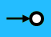

Digitale Ingang© 2018, ProtoIt Platform: RASPBERRY |  |
Beschrijving:
Digitale Ingang gebruik je voor een sensor die een digitaal spannings- niveau afgeeft. Digitaal betekent dat er twee waardes zijn: laag (= uit) of hoog (= aan).
´Laag´ heeft een waarde gelijk aan 0 en ´hoog´ een waarde ongelijk aan 0 (meestal 1).
Op de Raspberry zijn spanningen van 0 tot 0,8 volt gegarandeerd ´laag´ en van 2,1 tot 3,3 volt gegarandeerd ´hoog´.
Spanningen tussen 1,5 en 3 volt moet je vermijden, want daarvan weet je niet of ze door de Raspberry als ´laag´ of ´hoog´ worden gemeten.
LET OP! Een ingang kan niet meer dan 10mA verdragen. Bij een grotere stroom kan het Raspberry-board beschadigen.
Ook een spanningsniveau hoger dan 3,3 volt beschadigt het Raspberry-board.
Onderdelen:
Digitale Ingang
Instellingen:
| Pin | GPIO-pin waar het elektrocomponent op aangesloten is. |
| Signaal | Wordt uitgezonden wanneer het elektrocomponent een spanningsniveau hoger dan 1,6 volt afgeeft. |